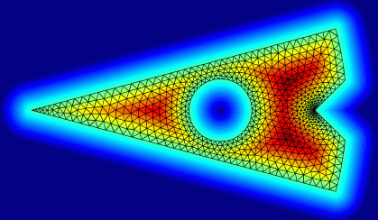
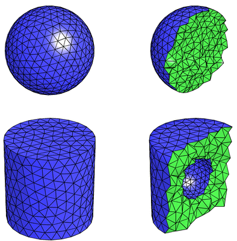
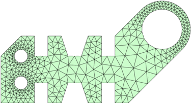
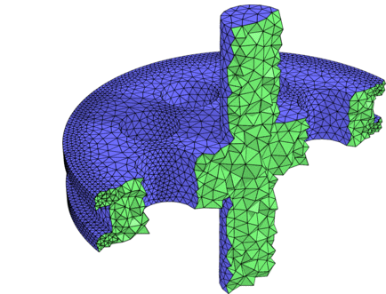
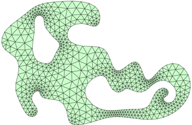
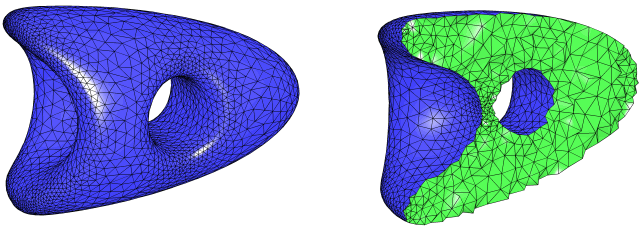
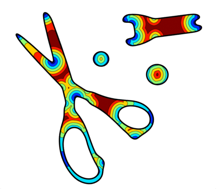
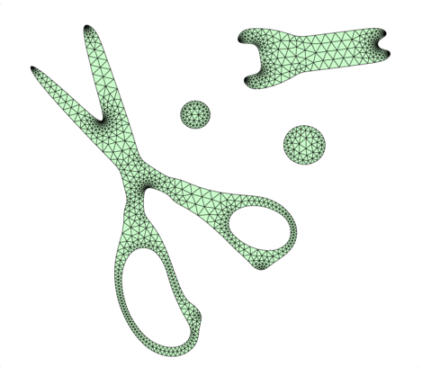
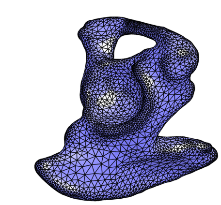
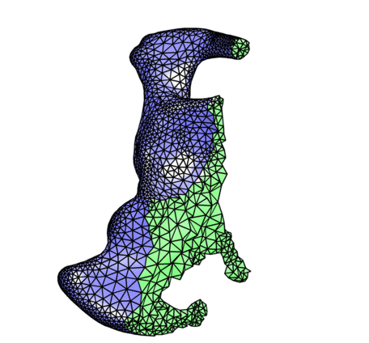

DistMesh Gallery - Images
Back
-
2-D mesh, the color shows the signed distance function (from red
inside the region to blue outside).

-
3-D meshes, the left plots show surface meshes and the right plots
show cross sections.

-
2-D and 3-D meshes created by set operations on simple objects.
Automatically computed mesh size functions.


-
2-D and 3-D meshes with smooth boundaries, represented by
discretized level sets.
Automatically computed mesh size functions taking into account
curvature, feature size, and mesh grading.


-
2-D meshing of regions in an image. The figures show the original image,
the automatically computed size function, and the generated mesh.


-
Tetrahedral mesh of a 3-D image from a CT scan (an iliac bone).


Per-Olof Persson
Department of Mathematics, UC Berkeley
persson@berkeley.edu
|
|